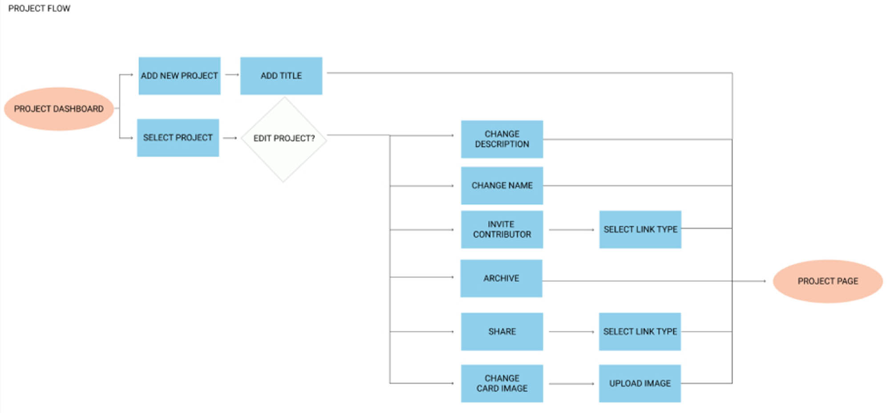
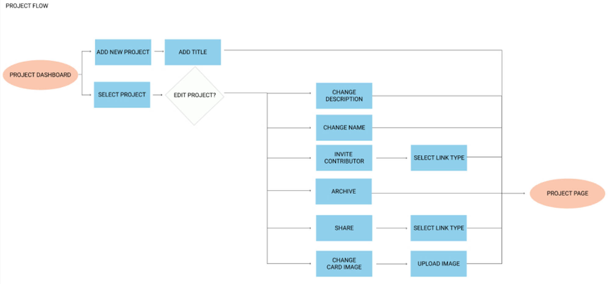

Pothos is a cloud-based, project management application that provides users with a convenient way to collaborate with their team to manage projects. Pothos targets creative-minded students and working professionals who enjoy working visually with their projects by using a simple, intuitive interface.
In the realm of project management applications, there was much room for growth. Users face major frustrations with the most popular product management applications. They desperately need better collaboration tools, a friendlier interface, and creative customization options.
Pothos aims to create a simple and user-friendly experience for users looking to creatively manage projects. Collaboration is made easy with built-in chat, content comment sections, and share links. Content is customizable, both in size and look, and visually appealing project cards have personalizable images.
I started by looking at some of the top project management applications used today.
Based on research, new competition could enter the marketplace by solving the discovered needs. A project management tool that was compatible with teams of any size, with an easy to use interface. Users need a visual approach to project management with better collaboration tools.
VIEW COMPETITIVE ANAYLSISA survey was created using Google Forms, then shared on multiple social media platforms, public forums, and on applicable survey websites. The goal was to familiarize me with project management application users to discover their needs and frustrations.
VIEW SURVEYIt was found that users depend on project management applications to collaborate with team members - yet this was also their main frustration. Users also complained about a complicated interface that was difficult to use and wanted more room for customizability.
VIEW SURVEY ANALYSISThe users range from students to working professionals from the ages of 21 and 59. They use these applications for varying projects, including personal, educational, and professional. User goals include real-time collaboration, sharing content, accessing content on any device, creating and editing to-do lists, and commenting on shared files.
SOFTWARE ENGINEER
40 YEARS OLD
MOTIVATIONS
Nathan uses project management applications for work. To-do lists keep the team focused and organized. The collaboration features are essential to for the team to communicate and collaborate.
Being able to access his content from any location allows his to work remotely
GOALS
FRUSTRATIONS
GRAPHIC DESIGNER
27 YEARS OLD
MOTIVATIONS
Mary uses project management applications daily at work. Her team collaborates to keep the client files updated and often need to work simultaneously. Being able to comment on any file type would save time switching between applications.
She would like to find a project management application with an intuitive interface. She likes the idea of customizing her projects to make them more distinguishable.
GOALS
FRUSTRATIONS
UNIVERSITY STUDENT
19 YEARS OLD
MOTIVATIONS
Billy uses project management applications daily for school related projects and assignments. He enjoys having his school related work in one organized space so he can manage his projects.
He needs real-time collaboration so his group can work simultaneously. He wishes privacy control was easier as he often has personal files in shared spaced.
GOALS
FRUSTRATIONS
User stories prioritized client requests and user needs uncovered during user research. To focus on a minimum viable product (MVP), only twenty-six of the fifty-one stories were implemented into the final application. I addressed the two key user frustrations. Collaboration issues and creating a friendlier interface.
VIEW USER STORIESA user flow based on the research mapped out how the user would interact with the application. The diagram ensured that each user flow was addressed in a cohesive, simple way.
 

Paper sketches allowed for experimentation with different layouts. The top sketches were tested by users, then recreated on myBalsamiq.
To uncover fundamental flaws the low-fidelity wireframes were tested by users remotely using Zoom.
The tested users did not understand the meaning of the icons. They were especially confused about the filter icon, so labels were added to all iconography. The message card was decreased in size to give conversation cards more prominence. Titles were also added to product cards to encourage clarity. A home button was added to the menu bar so users could easily navigate through the application.
Pothos, a type of ivy, is a sturdy plant that thrives with the right conditions. Being that a major discovered pain point was addressing collaboration issues, Pothos represents an analogy of the brand. To create the right conditions any project can succeed. Tag-lines could be, “nourish your projects”, “grow your ideas”, “grow your project”.

Pothos is easy-going, dedicated, collaborative, open minded, relaxed and creative.
LOGOS
The logo is refined, minimalistic.
PRIMARY
SECONDARY
COLOR PALETTE
The color palette is light with pastel tones that pair well with selected, stronger tones to establish trustworthiness and approachability while maintaing a creative feel.
White
#FFFFFF
Background
#FBFFFB
Inactive State
#F1F4F0
No-Image
#BDBDBD
Alert
#F2A27C
Button
#D2E5DB
Nav Bar
#497E68
Typography
#434344
Call to Action
#FAC7AF
TYPOGRAPHY
AmstervarAlpha Default is the selected brand typeface for the artsy softness, yet the serifs add a bit of structure, extending brand reach to a wider audience.
VIEW STYLEGUIDEThe style guide created the look and feel of the brand and influenced the visual interface.
The large, visually appealing project cards were customizable so that users had room to add their creative flair. Users requested the ability to allow for a personalized interface and complimented brand intentions.
Preference tests were conducted on UsabilityHub and in-person through out the visual design phase to discover user preferences. User preferences influenced the final style.
VIEW ORIGINAL TESTED ELEMENTSA clickable prototype was shared through Invision with the participants. The test was performed remotely using Zoom. The participants provided useful feedback and confirmed many of the design decisions that were made. Additionally, the participants had constructive suggestions to enhance the design's look and feel.
Active and inactive states were added to more clearly define where users were located in the application.
Text boxes and forms were adjusted to have a more modern look. A transparent overlay was added to
project cards so labels were readable.

Final iterations were made to enhance the look and feel of the design. Being that this was my first project, I had a lot to learn about visual design standards.
Project cards were edited so they had refined appearance. Active and inactive states were further adjusted to enhance clarification. Card titles were given a truncation limit.
The user pain points uncovered during research guided the application’s design. Though, I found myself wanting to implement everything they requested. I initially, I struggled with scope creep and learned about MVP in the process. More features can always be added in future versions of an application and it is important to stick to a minimum viable product.
If I had more time, I would have added more collaboration features. Having a small chat modal pop up at the bottom of the screen instead of navigation to the conversation window would streamline workflow. Additionally, being able to chat with team members on specific projects in a designated area would be useful. These features could be added in the future.
This project taught me that you can not test enough nor can you receive enough feedback. I learned that it is important to be flexible during the design process. Receiving critique and knowing when something is done enough is important. Being that design is an iterative process, there will always be room for improvement.
Lastly, I realized how important researching current design trends are. Innovation is fun, but your product needs to be usable and it's often not necessary to reinvent the wheel. Keeping up with industry design standards is an important aspect of being a designer.